|
 |
 |
By Jeff Head - Last Update: January 20, 2011              
       
| ||
| SPECIFICATIONS | PHOTOGRAPHS (Click on pic for an enlarged photo) |
|
Designation: FAC Length: est. 140 ft (42.6m) Beam: est. 40 ft (12.2m) Draft: est. 5 ft (1.5m) Displace (Full Load): 225 tons Propulsion: 2x Diesel w/4x MARI Waterjets Speed: 36 knots Range: est. 500 nm Crew: est. 15 Helicopter(s): None Sensors: - Type 362 Surface Search - HEOS 300 Navigation - Data Link Armament: - 8 SSM (YJ-83) - 1 X AK-630 30mm CIWS Ships in class: est. 100 In 2004, a new small combatant was seen under construction in the Qiuxin Shipyards in Shanghai. It quickly became apparent that the vessel was of a modern, wave-pircing catamaran design, with sloped sides attempting to achieve some degree of radar cross section reduction. The first of class was launched in the summer of 2004, with three others following by early to mid 2005. Since that time, production has proceeded in Qiuxin, but also started in at least three other shipyard: Jiangnan, Huangpu, and Hudong. Although it is not known exactly how many vessels have been produced, many vessels have been launched at each facility over the last several years. From the first four, which were seen often together in the Shanghai area, additional groups of four to eight vessels are now being seen in several regions all over the coastal areas of the country. It is estimated that perhaps as many as 100 vessels have been produced. The vessels are amred with what appears to be two housings for four type YJ-83 surface to surface missiles, for a total of eight missiles. The vessles are also armed with a single, Russian made, six-barrel AK-630 30mm CIWS on the fore deck, capable of firing 3,000 rounds per minute out to an effective range of 3,000 meters. A single mast houses an Type 362 surface search radar type and several other sensors, including a HEOS 300 Navigational radar. There is also a single data link antennae located aft, between the two missile launchers. With their high speed, their radar reduction construction, their surface to surface armament, and their apparent ability to recive targeting data from other sources, these vessels, when operating in large numbers and in conjunction with other larger surface combatants, or in conjunction with land based aircraft, could pose a credible threat to any enemy vessels they could get within range of and target. |
      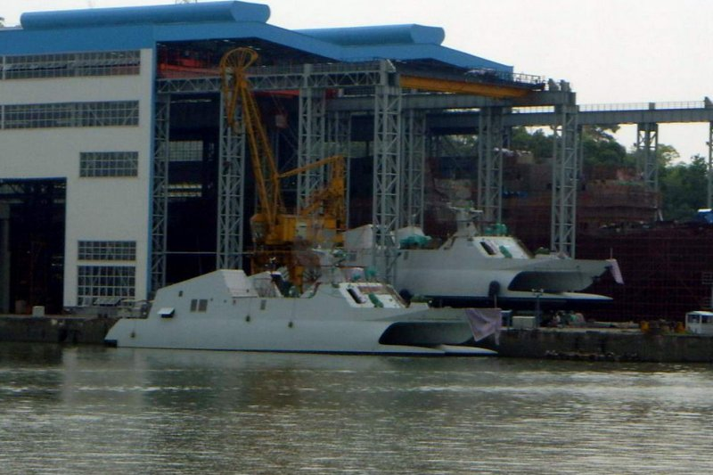 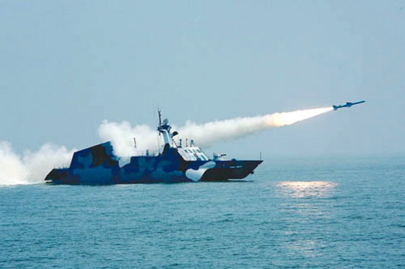 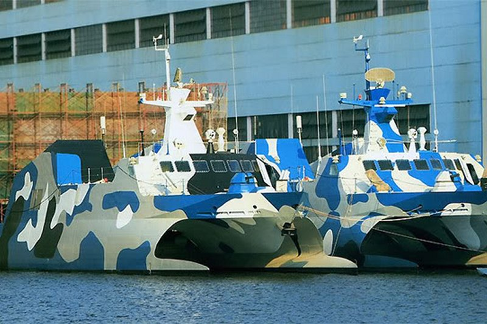 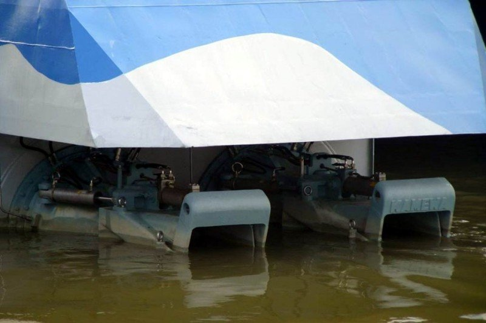 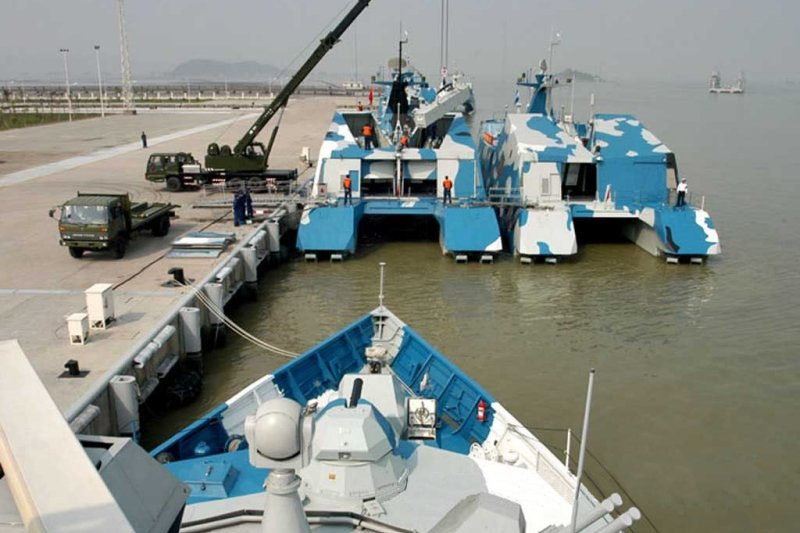 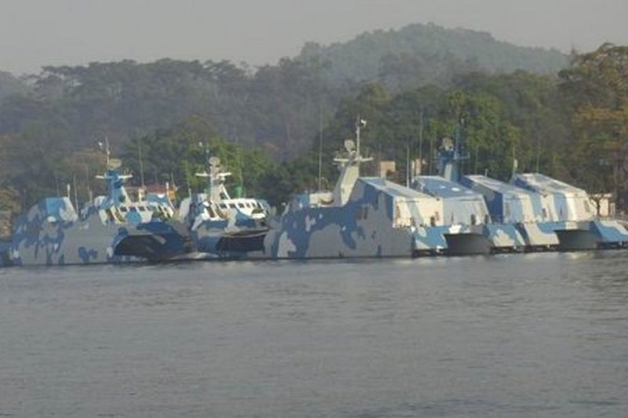 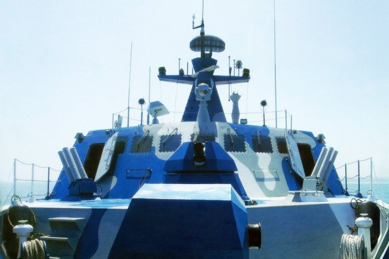 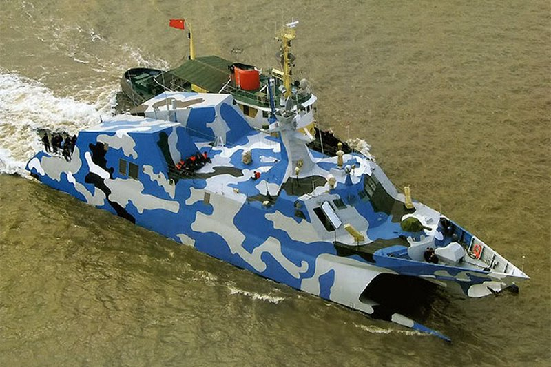 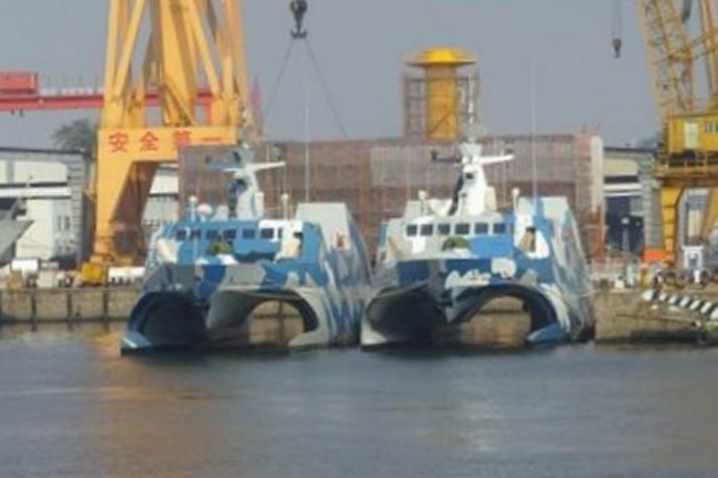 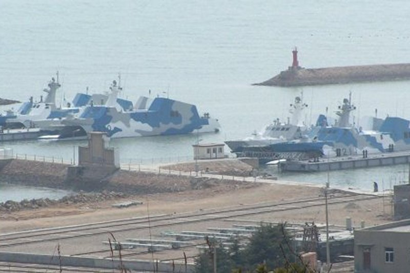 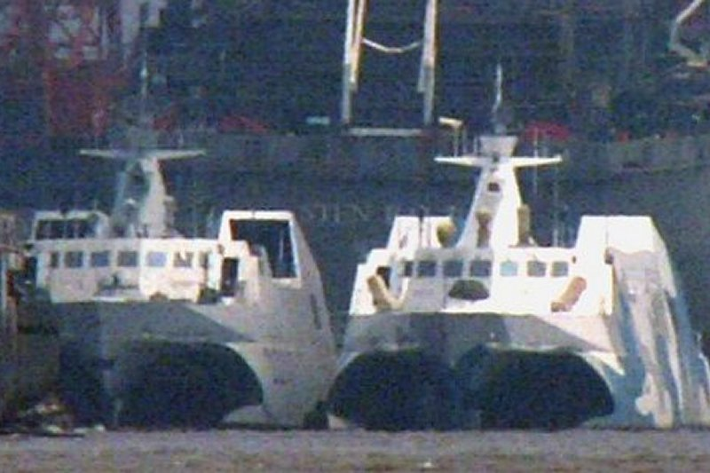 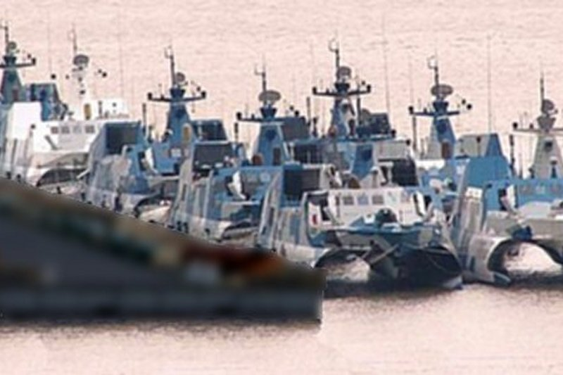 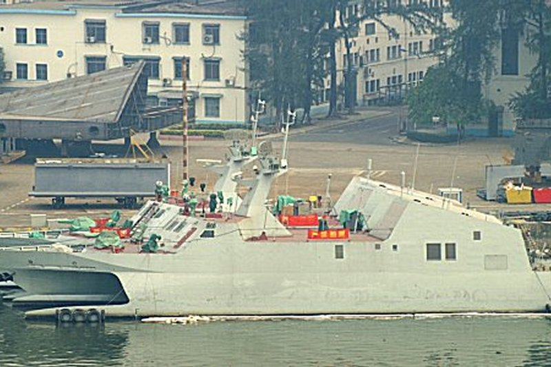 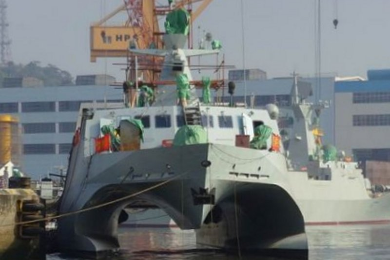 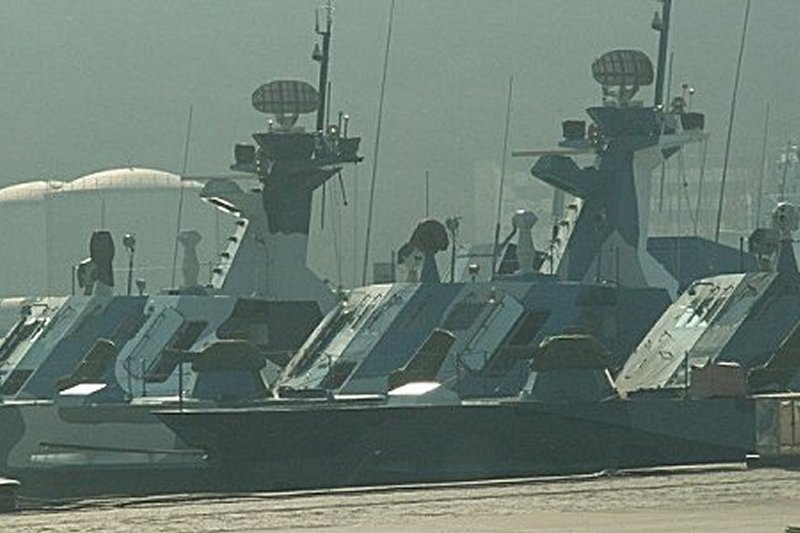 |


|
Jeff Head is a member of the US Naval Insitute who has many years experience in the power, defense, and computer industries. He currently works for the federal government helping maintain regional infrastructure. He is the author of a self-published military techno-thriller called, "Dragon's Fury," that projects a fictional third world war arising out of current events. Learn more about that series by clicking on the picture of the novel cover below:
 DRAGON'S FURY-World War against America and the West |
Copyright © 2005-2012 by Jeff Head
JEFFHEAD.COM Hit Counter

Jeff Head's Naval Sites Hit Counter